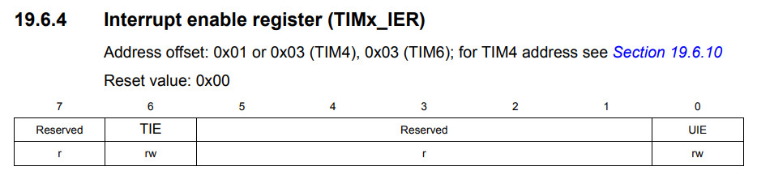
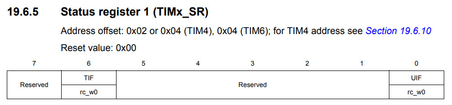
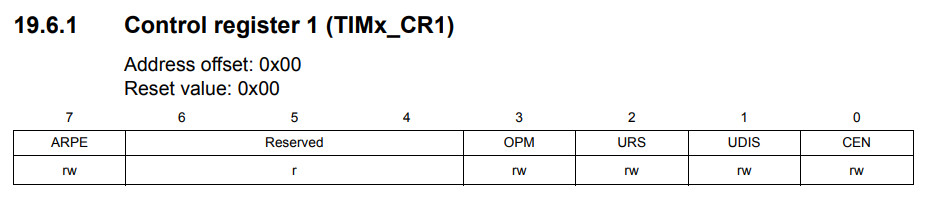

參考資訊：
https://programmer.group/stm8s-timer-basic-interrupt-timing.html
暫存器



.equ PB_ODR, 0x5005
.equ PB_IDR, 0x5006
.equ PB_DDR, 0x5007
.equ PB_CR1, 0x5008
.equ PB_CR2, 0x5009
.equ TIM4_CR1, 0x5340
.equ TIM4_PSCR, 0x5347
.equ TIM4_ARR, 0x5348
.equ TIM4_CNTR, 0x5346
.equ TIM4_IER, 0x5343
.equ TIM4_SR, 0x5344
.area data
.area initialized
cnt: .ds 2
.area sseg
.area home
int main
int 0
int 0
int 0
int 0
int 0
int 0
int 0
int 0
int 0
int 0
int 0
int 0
int 0
int 0
int 0
int 0
int 0
int 0
int 0
int 0
int 0
int 0
int 0
int 0
int timer4_handler
.area cseg
main:
mov PB_DDR, #0x20
mov PB_CR1, #0x20
mov TIM4_PSCR, #0x00
mov TIM4_ARR, #0xff
mov TIM4_CNTR, #0x00
mov TIM4_IER, #0x01
mov TIM4_SR, #0x01
mov TIM4_CR1, #0x81
bset PB_ODR, #5
mov cnt, #0x0000
rim
loop:
jp loop
timer4_handler:
mov TIM4_SR, #0
ldw x, cnt
incw x
ldw cnt, x
cpw x, #1000
jrne exit
mov cnt, #0x0000
bcpl PB_ODR, #5
exit:
iret
完成